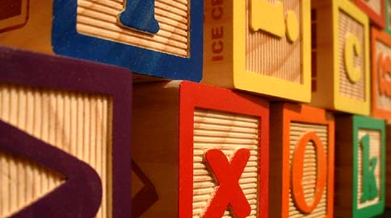
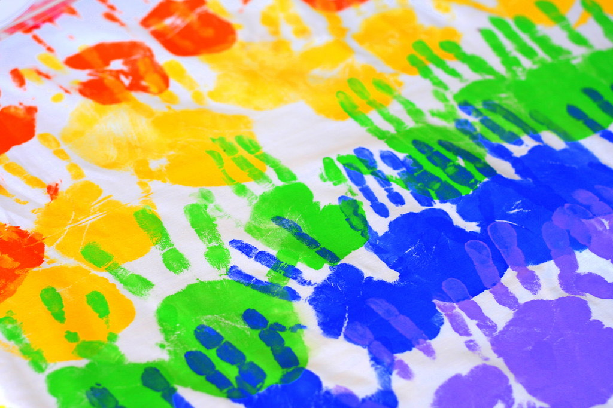

Educación Montessori, ciencia y naturaleza, en comunidad
Somos una escuela pequeña en Culiprán donde cada niño y niña avanza a su propio ritmo, con las manos en la tierra y el acompañamiento de nuestras guías. No imponemos ritmos: acompañamos procesos.
Lo que nos hace distintos
Cuatro pilares que se viven todos los días, en la sala, en el patio y en el cerro.

Montessori + ciencia
Metodología Montessori, con educación cósmica y un fuerte componente científico: observamos, experimentamos y hacemos preguntas.

Naturaleza todos los días
Estamos en un entorno rural que aprovechamos a fondo, con trekkings regulares a cerros y espacios naturales cercanos.

Comunidad de verdad
Las familias participan en mingas de mantención, reuniones y decisiones. Esta escuela se cuida entre todos.

Arte, cocina y música
Cocinamos, servimos, cantamos y tocamos instrumentos. La Escuela de Música de Culiprán funciona en nuestro mismo espacio.

Botas con barro, manos en la tierra
La mañana empieza tranquila: cada niño elige su primer trabajo mientras las guías observan y acompañan. Más tarde, un grupo sale a caminar hacia el cerro para observar plantas e insectos; otro se queda cocinando el pan que se va a compartir en el "restaurante" de la escuela.
Hay tiempo para todo, porque aquí nos damos tiempo: para terminar una tarea, para resolver un conflicto conversando, para mirar una hormiga durante diez minutos si hace falta. Al final del día, nadie se va apurado.
¿Te imaginas a tu hijo o hija aquí?
Te invitamos a conocernos, hacer una visita y conversar sobre cómo es el día a día en La Nueva Escuela Culiprán.